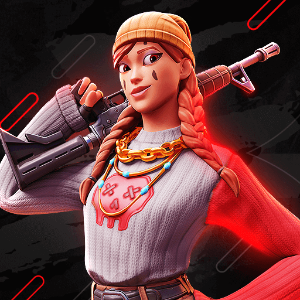
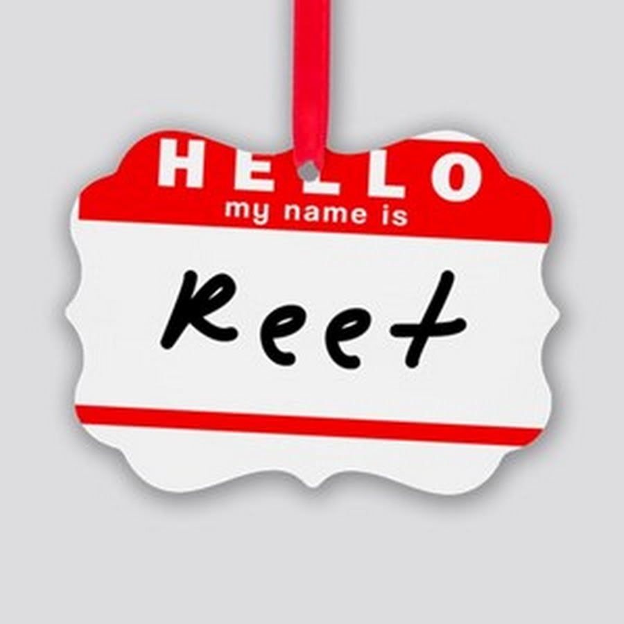

¿Que es el competitivo de fortnite?
Todo es resumido y llamado easports gaming que basicamente es la manera en la cual puedes ganar dinero a costa de un video juego el cual aparte de ser un hobbie sera un tipo de trabajo.
A lo largo de toda la historia de fortnite han ido evolucionando sus mecanicas y formas de juego,en lo que respecta el competetitivo del juego han llegado a hacer un mundial con representantes de cada una de las regiones (Norteamérica Este, Oeste, Brasil, Europa, Oceanía,Asia y Medio Oriente.)
Fortnite competitivo nos ha dejado grandes leyendas unas que decidieron irse a otro juego otras que se retiraron del mundo del gaming incluso todavia algunas juegan,pero esta pagina se creo para mantener informado/as los jugadores de las ultimas actualizaciones en las configuraciones de los PRO PLAYERS(Jugadores competitivos) de todas las regiones haremos enfoque especial a los jugadores invitados al proximo mundial de la region de NA WEST.
Antes de pasar con las configuraciones te dejo con un video de todos los jugadores invitados
TE Dejare un link en la imagen para que veas la configuracion
Reet es uno de los mejores jugadores de mando
Escribenos y dejanos un comentario
Te dejare nombres de jugadores muy buenos de diferentes regiones
| Nombre | Region | Pais |
|---|---|---|
| Mr savage | Europa | Noruega |
| Malibuca | Europa | Russia |
| King | Brasil | Argentina |
| Bugha | NA east | EE.UU |
| CZR | NA west | Mexico |